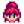
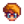
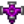
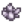
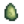

User:Techhead7890/shopstock
Jump to navigation
Jump to search
Noted special/rotating stock items:
| Monday | Tuesday | Wednesday | Thursday | Friday | Saturday | Sunday |
|---|---|---|---|---|---|---|
| Marnie's Ranch Closed  |
Marnie's Ranch Closed | No Pierre's! |  Iridium Sprinkler |
Decoratives
| Vendor | Monday | Tuesday | Wednesday | Thursday | Friday | Saturday | Sunday |
|---|---|---|---|---|---|---|---|
| Robin | All Oak | All Birch | All Wallnut | 2x Tall Plant/Decorative | 1ea Lamp and Armchair | 1ea Poster & Chair | 1x Couch, 1x Thursday |
| Oasis | Sconce | Bulb Sconces | |||||
| Island Trader |
Crystalarium
Selected products from the Desert Trader that can be bought using only Crystalarium materials. DT also has other barter stock that isn't included in this list.
- note that this is not always efficient and indeed, the Ruby/Jade ones are probably the only "good" examples. (Diamond takes 5 days to grow, and replaces 900g of Saloon-bought coffee; unless speedrunning, cloth and cheese can likely be farmed off animals.)
| Image | Name | Price |
|---|---|---|
| Bomb |  Quartz (5) | |
| Triple Shot Espresso | Diamond (1) | |
| Spicy Eel | Ruby (1) | |
| Cloth Wednesday | Aquamarine (3) | |
| Cheese Friday | Emerald (1) | |
| Staircase Sunday |  Jade (1) |